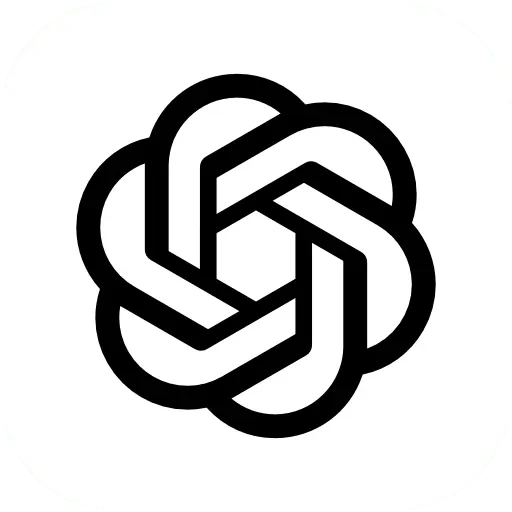
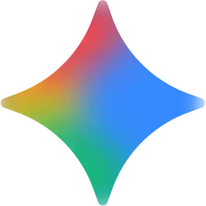
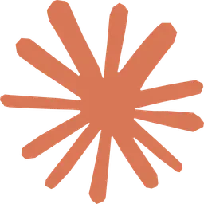

Quién soy y cómo trabajo
¡Hola! Soy Iriome, estudiante de primer año de Desarrollo de Aplicaciones Multiplataforma (DAM). Desde muy joven descubrí mi vocación por la informática, impulsado por una profunda curiosidad técnica. Esta pasión me ha llevado a enfocarme en el desarrollo backend, la arquitectura de software, y actualmente me encuentro ampliando mis competencias en el diseño de software estructurado y soluciones orientadas a objetos.
Durante mi formación, he demostrado una alta velocidad de aprendizaje y resiliencia técnica. Al enfrentarme al ecosistema de Java, logré comprender, dominar e implementar conceptos avanzados de Programación Orientada a Objetos (POO) y testing unitario robusto. Ahora estoy dirigiendo este aprendizaje hacia la optimización de algoritmos y el diseño de bases de datos relacionales.

Iriome Naranjo
Desarrollador Backend Java Junior (DAM)
📍 Las Palmas de Gran Canaria, España
📅 Planificación Metódica
El compromiso de entrega es fundamental. Mi flujo de trabajo se basa en hitos claros y estructurados:
Planificación Temporal: Divido el desarrollo en tareas fechadas en calendario antes de escribir la primera línea de código.
Enfoque MVP: Garantizo siempre un núcleo funcional (Minimum Viable Product) en los plazos establecidos.
Desarrollo Iterativo: Priorizo las funciones críticas y planifico mejoras secundarias en fases posteriores.
🛠️ Calidad y Robustez
Aseguro la calidad del software mediante rigor técnico y buenas prácticas colaborativas:
Código Modular: Priorizo la legibilidad, mantenibilidad y la arquitectura orientada a objetos modular.
Garantía de Calidad: Valido la lógica del negocio mediante suites de pruebas unitarias robustas.
Integración Ágil: Utilizo flujos de control de versiones Git y documentación exhaustiva.
💼 Experiencia Profesional ⏱️ Total: 11 meses
Técnico de Soporte & Automatización RPA
mayo 2026 - junio 2026Noray — Contrato de Prácticas (Híbrido)
Diseño y desarrollo de flujos RPA end-to-end con Power Automate Desktop sobre portales PowerApps y Microsoft 365:
- Logré eliminar 25+ horas de gestión manual semanal al automatizar el procesamiento de +75 casos diarios.
- Optimizé el seguimiento de casos pendientes de información integrando browser automation con scraping estructurado.
- Entregué con éxito el flujo en producción bajo la metodología ágil MVP.
Técnico de Soporte de TI (Sustituciones)
julio 2025 - noviembre 2025Multiópticas — Jornada Completa (Presencial)
Gestión integral de soporte de TI para la oficina central:
- Garantía de la continuidad operativa mediante el diagnóstico y soporte de red (LAN/VLAN, TCP/IP).
- Mantenimiento preventivo y correctivo de hardware/software bajo sistemas operativos Windows/Linux.
- Resolución ágil y eficaz de incidencias técnicas escaladas a nivel presencial y remoto.
Técnico de Soporte de TI
febrero 2025 - mayo 2025Multiópticas — Contrato de Prácticas (Presencial)
Soporte técnico y despliegue de infraestructura de red empresarial:
- Reducción del tiempo de puesta en marcha de nuevos equipos estandarizando la instalación del SO corporativo.
- Configuración y mantenimiento de cableado estructurado y hardware de comunicaciones.
🎓 Formación Académica
Técnico en Sistemas Microinformáticos y Redes (SMR)
septiembre 2023 – junio 2025IES Lomo de la Herradura (Telde, España) — Graduado
Estudios enfocados en la administración de sistemas y diseño de infraestructuras de red. Capacitación avanzada en montaje y reparación de hardware, configuración de routers y switches Cisco, segmentación de redes virtuales (VLAN), y virtualización con entornos Linux y Windows Server.
Técnico Superior en Desarrollo de Aplicaciones Multiplataforma (DAM)
septiembre 2025 – junio 2027IES Lomo de la Herradura (Telde, España) — En curso
Formación centrada en la ingeniería de software y programación multiplataforma. Especialización técnica en Programación Orientada a Objetos avanzada (Java), bases de datos SQL y NoSQL, modelado de sistemas (UML), control de calidad mediante JUnit 5 y flujos colaborativos GitFlow.
Técnico Superior en Desarrollo de Aplicaciones Web (DAW)
Especialización PlanificadaIES El Rincón (Las Palmas de Gran Canaria, España)
Doble titulación orientada a completar un perfil Full-Stack. Enfoque proyectado hacia la integración de servicios de red, tecnologías de cliente dinámicas y despliegue continuo en entornos de producción.
💻 Aptitudes & Competencias (Skills)
Lenguajes de Programación y Scripting
Herramientas y Entornos



Otras Áreas de Competencia
Redes & Sistemas
- Redes: LAN-WAN, VLAN, TCP/IP, Wi-Fi, Cableado Estructurado, Packet Tracer
- Sistemas: Active Directory, Windows Server, Linux OS, Virtualización, Ciberseguridad Básica
- Soporte: Soporte Técnico, Asistencia Remota, Mantenimiento Preventivo, Copias de Seguridad, Resolución de Incidencias
Metodologías & Automatización
- RPA/Automatización: Power Automate Desktop (PAD), Automatización de Flujos
- Desarrollo: Programación Orientada a Objetos (POO), Estructuras de Datos, Modularidad
- Calidad & Diseño: JUnit 5 (Pruebas unitarias), Visual Paradigm (Modelado UML)
Aptitudes Interpersonales
- Productividad: Gestión del Tiempo, Resolución de Problemas, Adaptabilidad
- Colaboración: Trabajo en Equipo, Atención al Cliente, Gestión de Proyectos (MVP)
🚀 Desafíos & Roadmap de Desarrollo 2026
⚡ En Curso
Refactorización Premium del Portfolio Web
Fin previsto: Agosto 2026Arquitectura Limpia & UI/UX
Lavado de cara completo y optimización continua de la interfaz web. Lógica modular orientada a objetos, transiciones fluidas de CSS, menús adaptados y compresión WebP de recursos visuales. Nota: Aunque el portfolio se actualiza incrementalmente de forma constante, el objetivo principal es consolidar un rediseño completo de la interfaz.
⏳ Backlog (Planificación)
Canary Wine & Guachinches API
Previsto: Septiembre - Noviembre 2026Kotlin, Spring Boot & PostgreSQL
API REST premium utilizando Spring Boot para catalogar guachinches y bodegas con un motor estricto de reglas de negocio que modelen las limitaciones y regulaciones de apertura locales.
✅ Completados
Inmersión y Fluidez en Kotlin v2.2
CompletadoEcosistema Multiplataforma & Backend
Bases asentadas del paradigma funcional y de objetos de Kotlin v2.2, ganando soltura en tipos seguros contra nulos (null safety), concisión de sintaxis y el compilador nativo de la JVM. Este conocimiento sirve como cimiento técnico para el próximo proyecto destacado: Canary Wine y Guachinche API →.
Habitly — Gestión Inmobiliaria
CompletadoJava SE & Compliance Legal
Lógica de negocio completa con persistencia y control fiscal. Ver detalles del proyecto →
Facturación Gastronómica e Impuestos
CompletadoJava SE & Precisión Matemática
Motor de control financiero y reparto de céntimos con BigDecimal desarrollado como simulación de un proyecto de un cliente real. Ver detalles del proyecto →
📅 Calendario de Disponibilidad (2026 - 2028)
Planificación temporal y disponibilidad para el desarrollo de proyectos freelance o incorporación a equipos de trabajo. Consulta los periodos de formación académica y las fechas específicas sin disponibilidad.